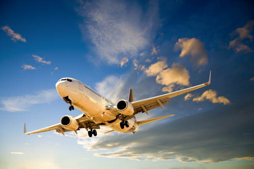
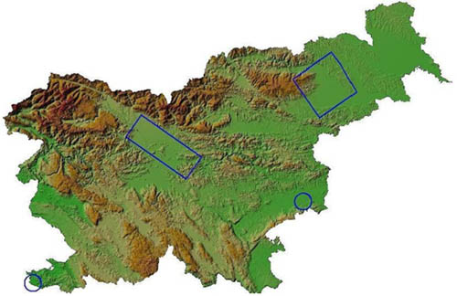
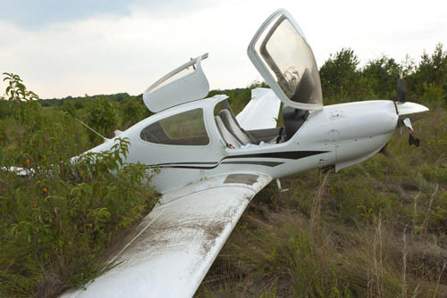

LETALSTVO NAD SLOVENIJO, LETALIŠČA IN SPLOŠNO O LETALSKIH NESREČAH

Letalski promet nad Slovenijo in letališča
Slovensko nebo po podatkih kontrole zračnega prometa za leto 2012 letno preleti okoli 130.000 letal, medtem ko kontrola opravi okoli 268.000 operacij (vzleti, pristanki, preleti). Večji porast preletov se zgodi v poletnih mesecih, ko slovensko nebo preleti tudi do 1200 letal dnevno. Med vsemi letali največ preletov naredijo airbus A320, boeing 737-800 in airbus A319, Slovenijo pa preletijo v dobrih desetih minutah. Zračni promet nad Slovenijo urejajo letališča, priletna in območna kontrola zračnega prometa.
Letalski promet se v osnovi deli na potniško in tovorno letalstvo, z zgoraj navedenimi letali pa se je v Sloveniji mogoče seznaniti predvsem na treh večjih mednarodnih letališčih: Letališče Jožeta Pučnika Ljubljana, Letališče Edvarda Rusjana Maribor, Letališče Portorož. Poleg omenjenih treh letališč je v Sloveniji evidentiranih še dvanajst javnih letališč, na katerih so manjši zrakoplovi, ki prevažajo samo pilota ali nekaj potnikov.
Letališče Ajdovščina, letališče Bovec, letališče Celje, letališče Cerklje ob Krki (vojaško-civilno oziroma mešano letališče), letališče Divača, letališče Lesce, letališče Murska Sobota, letališče Novo mesto, letališče Postojna, letališče Ptuj, letališče Slovenj Gradec, letališče Šoštanj. K letalsko-športnim dejavnostim prištevamo tudi 41 vzletišč (podatki iz leta 2010).
Naše največje letališče je Letališče Jožeta Pučnika Ljubljana, opremljeno je za vzletanje in pristajanje letal z do 480 potniki in 30.000 kilogrami tovora. Letališče Edvarda Rusjana Maribor lahko sprejme letala, ki prevažajo do 200 potnikov in 30.000 kilogramov tovora. Na Letališču Portorož pa lahko pristajajo letala, ki prevažajo do 46 potnikov in 1500 kilogramov tovora.
Glede na omenjeno dejstvo lahko predvidevamo, da je možnost letalskih nesreč večjega obsega predvsem na območju pristajanja in vzletanja z letališča Ljubljana, letalske nesreče manjšega obsega pa je mogoče pričakovati na območju portoroškega in mariborskega letališča ter mešanega letališča Cerklje ob Krki.

Slika 2: Nadzorovane cone (CTR) treh mednarodnih letališč in mešanega letališča Cerklje ob Krki (Vir: GIS Ujme, 2009)
Nesreča zrakoplova

Dejstvo je, da se v povprečju 85 odstotkov nesreč zrakoplovov zgodi ob vzletanju in pristajanju, torej na območju nadzorovanih con. Ker na območju nadzorovanih con živi kar 20 odstotkov slovenskega prebivalstva, se moramo zavedati, da v nesreči zrakoplova lahko pričakujemo tako ponesrečence iz zrakoplova kot naključne prebivalce, če zrakoplov pade v urbano naselje. Poleg vzletov in pristankov so tudi drugi dejavniki, ki povečujejo verjetnost nesreče zrakoplova. To so geografske značilnosti (visoki hribi, gore, jezero, morje), vremenske razmere (nevihte z močnimi vetrovi, močno sneženje, megla), prevoz nevarnega blaga in človeški dejavnik (servisne službe, kontrolorji, piloti).
Nesreča zrakoplova je nesreča v zračnem prometu in spada po zakonu o varstvu pred naravnimi in drugimi nesrečami med »druge nesreče«.
Za nesrečo zrakoplova je značilno:
- da se običajno zgodi brez opozorila, v trenutku – nepričakovano
- da so pogosto žrtve vsi potniki in člani posadke, možnost žrtev med prebivalci
- da se lahko zgodi v krajih, ki niso takoj ali preprosto dostopni
Nesreče zrakoplovov delimo glede na:
- vrsto zrakoplova (potniški, tovorni ali vojaški)
- kraj nesreče (naseljeno območje, težko dostopno območje, vodne površine, območje letališča)
Posledice nesreče zrakoplova:
- smrtne žrtve
- večje število ponesrečenih
- uničena ali poškodovana infrastruktura
- vpliv na okolje
Posledice nesreče zrakoplova se lahko raztezajo tudi na svojce žrtev, reševalce, očividce. Kljub vsemu se približno 95 odstotkov nesreč zgodi na letališčih ali v njihovi bližini, pri vzletih in pristankih. Prav zaradi omenjenega morajo imeti letališča izdelana načrte za zaščito in reševanje, ki zagotavljajo takojšen odziv na vse vrste nevarnosti. S tem bistveno vplivajo na intenziteto posledic nesreče.
Pogostost nesreč z zrakoplovi
Večjih nesreč v Sloveniji v zadnjih 20 letih ni bilo. Zadnja se je zgodila 1. septembra 1966, ko je letalo britanske družbe strmoglavilo v gozd pred letališčem Jožeta Pučnika v Ljubljani. V nesreči je po poročanju britanskega častnika umrlo 95 od 117 ljudi na krovu, razlog za nesrečo pa so pripisali pilotu, ki naj bi bil napačno pripravil višinomer. Večina nesreč, ki se zgodijo, so manjšega obsega, mednje spadajo nesreče ultralahkih letal, zmajarjev, padalcev in balonov. Pri omenjenih nesrečah so pogosto žrtve piloti zrakoplova.
POSEBNOSTI IN NEVARNOSTI NA NAJBOLJ POGOSTIH LETALIH V SLOVENIJI
Adria Airways razpolaga z naslednjimi potniškimi letali, med katerimi sta airbus A320 in airbus A319 vrsti letal, ki, kot rečeno, opravita največ preletov čez Slovenijo na leto.
| Airbus A320 – eno letalo | ||||||||||||
|
||||||||||||
| Airbus A319 – dve letali | ||||||||||||
|
||||||||||||
| Bombardier CRJ900 – štiri letala | ||||||||||||
|
||||||||||||
| Bombardier CRJ200LR – pet letal | ||||||||||||
|
Letalo predstavlja zahteven objekt za opravljanje gasilskih intervencij zaradi števila potnikov, količine goriva, elektrike, rotacijskih elementov in v primeru tovornega letala – zaradi tovora. Kot lahko razberemo iz podatkov o rezervoarjih goriva, potniška letala predstavljajo prave »leteče cisterne« visokovnetljivega kerozina, kar je ključno pri opravljanju nalog reševanja v letalski nesreči.